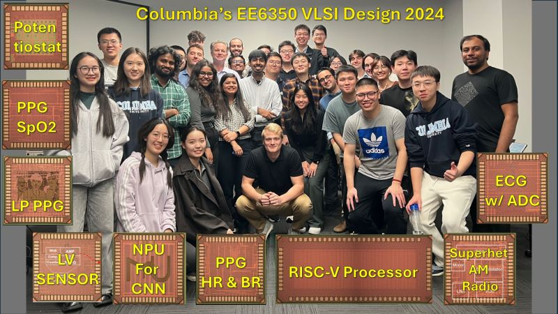

Posted on LinkedIn: Chips are working! Well-deserved kudos to the “VLSI Design Lab” (t/o course) students who measured their chips and demonstrated them in an application. Take a look at their websites and videos.
We had another successful VLSI Design Lab offering at Columbia in 2024. Students designed custom chips from scratch in spring, taped them out to a commercial foundry in summer, tested them, and demonstrated them in fall in an application with their custom PCB: three PPG chips: a PPG with SpO2 measurement, a PPG with heart-rate and breathing-rate measurement, and a low-power PPG with lock-in amplification; an ECG chip including a 10-bit SAR ADC; an AM radio with upconversion to a 10.7MHz IF; a light-powered potentiostat; an ultra-low-power R-C sensor readout; an NPU accelerator for CNNs; and last but not least, a full RISC-V processor.
Congratulations to all teams for completing their tape-out and testing, and many thanks to the teaching assistants Berk ADIM, Mor Shimshi, Alfred Festus Davidson and Zhipeng Fan for all their help and tireless mentorship. Many thanks to Mingoo Seok for co-supervising the RISC-V design.
Special thanks to our sponsor Apple and Joao Cerqueira our liaison.
This is the sixth edition of this lab course. More information on the class and websites and videos for the more than 50 projects over the years are available from the VLSI Design Lab Course Site and YouTube! Channel
Beautiful way to conclude the semester and go into the holidays.
Happy Holidays!